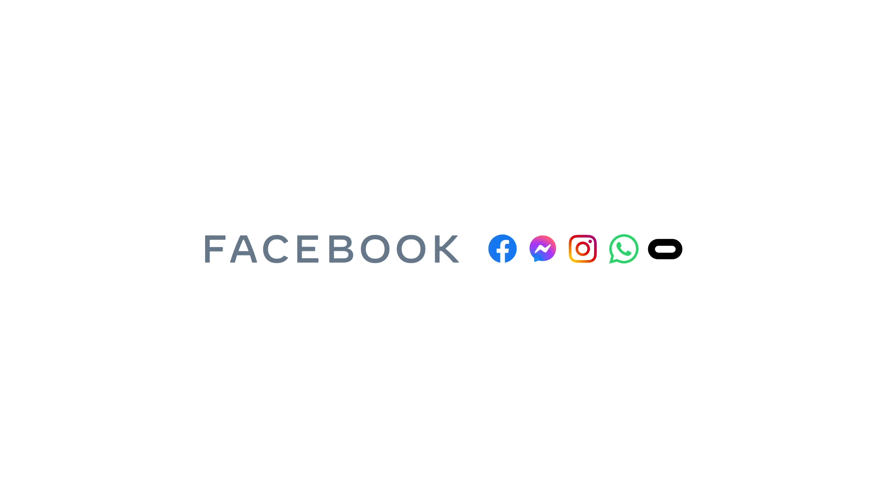

¿QUE ES META PLATFORMS, INC?

Es un conglomerado estadounidense de redes sociales con sede en Menlo Park, California. Fue fundado por Mark
Zuckerberg, junto con sus compañeros de cuarto y estudiantes de Harvard, Eduardo Saverin, Andrew McCollum,
Dustin Moskovitz y Chris Hughes, originalmente como TheFacebook.com, el actual Facebook, es la red social más
usada del mundo. Meta es una de las empresas más valiosas del mundo.
Meta ofrece otros productos y servicios más allá de su plataforma Facebook, incluidos Facebook Messenger,
Facebook Watch y Facebook Portal. También ha adquirido Instagram, WhatsApp, Oculus VR, Giphy y Mapillary, y
tiene una participación del 9,9% en Jio Platforms.
SUS REDES SOCIALES MÁS DESTACADAS:
 Facebook: Es un servicio de redes y medios sociales en línea estadounidense con sede en Menlo
Park, California. Su sitio web fue lanzado el 4 de febrero de 2004 por Mark Zuckerberg, junto con otros
estudiantes de la Universidad de Harvard y compañeros de habitación, Eduardo Saverin, Andrew McCollum, Dustin
Moskovitz y Chris Hughes. Pertenece al conglomerado Meta que incluye otros servicios informáticos y de redes
sociales. Está disponible en español desde el 11 de febrero de 2008.2 Facebook es una plataforma que funciona
sobre una infraestructura de computación basada principal y totalmente en sistemas GNU/Linux, usando el
conjunto de tecnologías LAMP, entre otras
Leer Más....
Facebook: Es un servicio de redes y medios sociales en línea estadounidense con sede en Menlo
Park, California. Su sitio web fue lanzado el 4 de febrero de 2004 por Mark Zuckerberg, junto con otros
estudiantes de la Universidad de Harvard y compañeros de habitación, Eduardo Saverin, Andrew McCollum, Dustin
Moskovitz y Chris Hughes. Pertenece al conglomerado Meta que incluye otros servicios informáticos y de redes
sociales. Está disponible en español desde el 11 de febrero de 2008.2 Facebook es una plataforma que funciona
sobre una infraestructura de computación basada principal y totalmente en sistemas GNU/Linux, usando el
conjunto de tecnologías LAMP, entre otras
Leer Más....
 Instagram: Es una aplicación y red social de origen estadounidense, propiedad de Meta, cuya
función principal es poder compartir fotografías y vídeos con otros usuarios. Está disponible para
dispositivos Android, iOS y Windows 10.
Creada por Kevin Systrom y Mike Krieger, Instagram fue lanzada el 6 de octubre de 2010. Esta aplicación ganó
rápidamente popularidad, llegando a tener más de 100 millones de usuarios activos en abril de 2012 y más de
300 millones en diciembre de 2014.
Leer Más....
Instagram: Es una aplicación y red social de origen estadounidense, propiedad de Meta, cuya
función principal es poder compartir fotografías y vídeos con otros usuarios. Está disponible para
dispositivos Android, iOS y Windows 10.
Creada por Kevin Systrom y Mike Krieger, Instagram fue lanzada el 6 de octubre de 2010. Esta aplicación ganó
rápidamente popularidad, llegando a tener más de 100 millones de usuarios activos en abril de 2012 y más de
300 millones en diciembre de 2014.
Leer Más....
 WhatsApp: Es una aplicación de mensajería instantánea para teléfonos inteligentes, propiedad
de Meta. La aplicación permite enviar y recibir mensajes mediante Internet, así como imágenes, vídeos, audios,
grabaciones de audio (notas de voz), documentos, ubicaciones, contactos, gifs, stickers, así como llamadas y
videollamadas con varios participantes a la vez, entre otras funciones.2 WhatsApp se integra automáticamente
a la libreta de contactos, lo que lo diferencia de otras aplicaciones, ya que no es necesario ingresar alguna
contraseña o PIN para acceder al servicio.
Leer Más....
WhatsApp: Es una aplicación de mensajería instantánea para teléfonos inteligentes, propiedad
de Meta. La aplicación permite enviar y recibir mensajes mediante Internet, así como imágenes, vídeos, audios,
grabaciones de audio (notas de voz), documentos, ubicaciones, contactos, gifs, stickers, así como llamadas y
videollamadas con varios participantes a la vez, entre otras funciones.2 WhatsApp se integra automáticamente
a la libreta de contactos, lo que lo diferencia de otras aplicaciones, ya que no es necesario ingresar alguna
contraseña o PIN para acceder al servicio.
Leer Más....
s